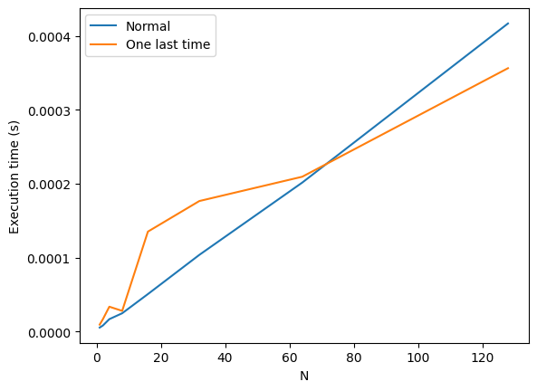

逆三角関数の総和の高速化
形状を扱うプログラムでは, ある点が図形の中にあるか外にあるかを判定する処理が含まれる.
この判定には逆三角関数をの計算結果の和が必要になることから, 計算コストが高くなりがちである.
2次元空間であれば逆三角関数を計算しない手法も広く知られているが, 3次元空間以上については情報を見つけられなかった.
そこで, 逆三角関数の総和計算を高速化するアイディアを試す.
逆三角関数の計算回数の削減
三角関数について次の性質がよく知られている.
sin(θ1+θ2)cos(θ1+θ2)=sinθ1cosθ2+cosθ1sinθ2=cosθ1cosθ2−sinθ1sinθ2
これを利用することで, 逆三角関数で角度に戻してから総和を取るのではなく, 三角関数のまま計算して最後に逆三角関数で角度に戻すという手段がとれる.
つまり逆三角関数の計算は1回のみで済む.
注意点として, 逆三角関数の多価性から, θ1+θ2 が 0 以上 2π 未満となるようにしておく必要がある.
超えてしまう可能性がある場合は, 次式の関係を繰り返し利用して角度を小さくしてから計算し, 逆三角関数計算後に適用した回数分倍化させる.
sin22θ=2cosθ+1cos22θ=2cosθ+1
3つ以上の角度の和を扱う場合はオイラーの公式
eiθ=cosθ+isinθ
を用いるのが良い.
オイラーの公式から, 上記の三角関数の演算を次式のように複素数の乗算であらわすことができる.
cos(j∑θj)+isin(j∑θj)=ei∑jθj=j∏eiθj
角度の合計値に関する制限は同様に存在し, 同様の対処方法を用いる必要がある.
試験計算
arccos を計算してから総和を取った場合と最後に1回だけ arccos を計算する場合の計算時間比較を Google Colab 上で実施した.
入力データには θj=2Nπ として cosθj を用いた.
N を変化させて 1000 回ずつ計測した平均値を図に示す.

N が増加するにつれて最後に1回だけ計算する手順の計算時間増加が穏やかになる傾向となった.
しかし処理系への依存性が強いためか, 単純な速度の比較結果は実行ごとに大きく変動していた.
なお, 角度の上限を制限するための前処理も必要になることから, この手順はさらに性能悪化の余地がある.
まとめ
逆三角関数の総和計算の高速化を高速化するために最後に1回だけ逆三角関数の計算する手順を検討した.
総和を取る対象の個数が多いほどその手順が高速になる傾向は見られた.
一方で処理系への依存性や前処理の必要性から, 実問題においてこの手順の優位性を活かすのは簡単ではないとわかった.